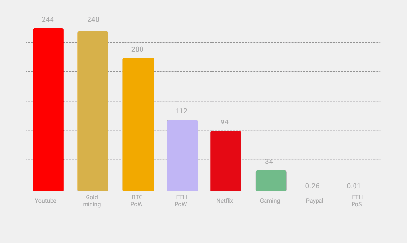

Ethereum's energy consumption will be reduced by ~99.95% following The Merge from proof-of-work (PoW) to proof-of-stake (PoS). After The Merge, Ethereum will use dramatically less carbon to be more secure.
Since its inception, Ethereum has aimed to implement a proof-of-stake consensus mechanism, but doing this without sacrificing security and decentralization has taken years of focused research and development. Therefore, the network started by using proof-of-work consensus. Proof-of-work consensus requires miners to use their computing hardware to solve a puzzle. The solution to the puzzle proves that energy has been expended by the miner, demonstrating that they invested real-world value for the right to add to the blockchain.
The Beacon Chain has been running the proof-of-stake since November 2020 alongside the proof-of-work Ethereum Mainnet. In 2022, Ethereum developers transitioned several testing networks (testnets) running proof-of-stake to proof-of-stake by merging with their own Beacon Chains. These helped client teams test the software before moving to longer-lived networks. After these testnets, Ethereum developers launched new testnets for the community to use (Kiln & Kintsugi) and ran multiple shadow forks of existing testnets and Mainnet.
Estimates based on the current Beacon Chain suggest that The Merge to proof-of-stake could result in a 99.95% reduction in total energy use, with proof-of-stake being ~2000x more energy-efficient than proof-of-work. The energy expenditure of Ethereum will be roughly equal to the cost of running a modest laptop for each node on the network.
Ethereum's total energy consumption is ~112 TWh/yr, comparable to that of the Netherlands, with a Carbon emission equivalent to that of Singapore (53 MT/yr). For comparison, Bitcoin currently expends about 200 TWh/yr of energy and emits about 100 MT/yr C, while generating about 32,000 T of electrical waste from obsolete hardware annually. Switching off Ethereum's proof-of-work in favor of proof-of-stake will reduce this energy expenditure by more than 99.95%, implying that the total energy expenditure for securing Ethereum is closer to TWh/yr.
The figure above shows the estimated annual energy consumption in TWh/yr for various industries.